長期トレンド
JKMとJEPXシステムプライスの推移グラフ
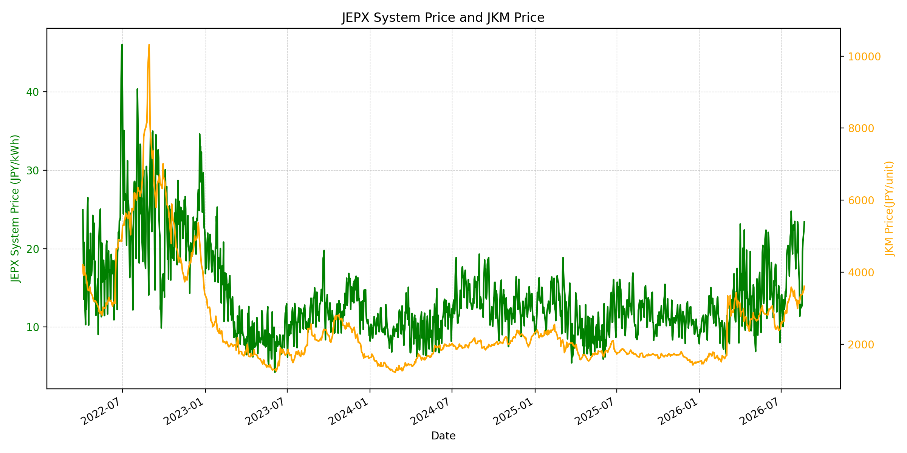
WTIの推移グラフ
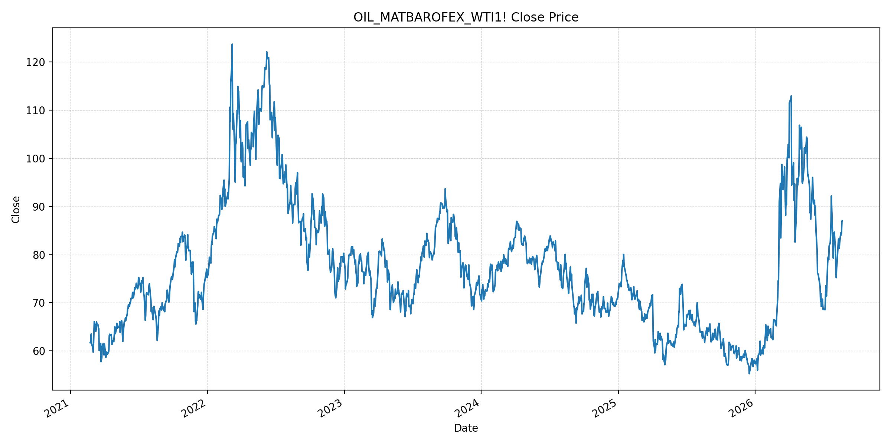
JEPXエリアプライスグラフ（直近一年分）
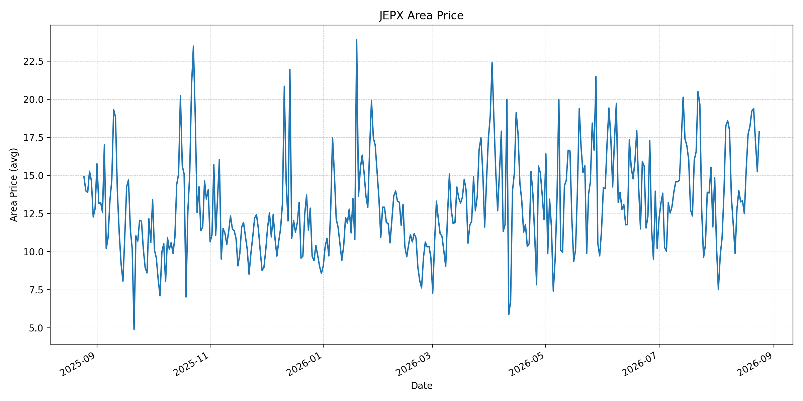
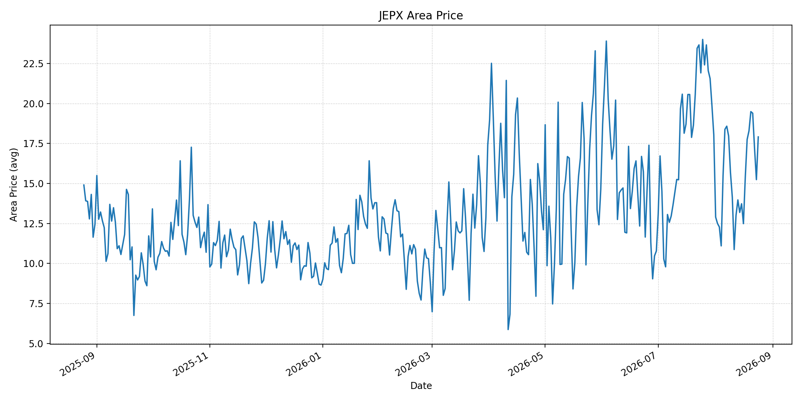
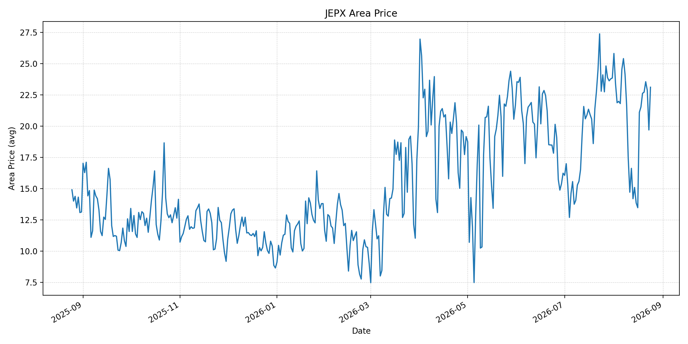
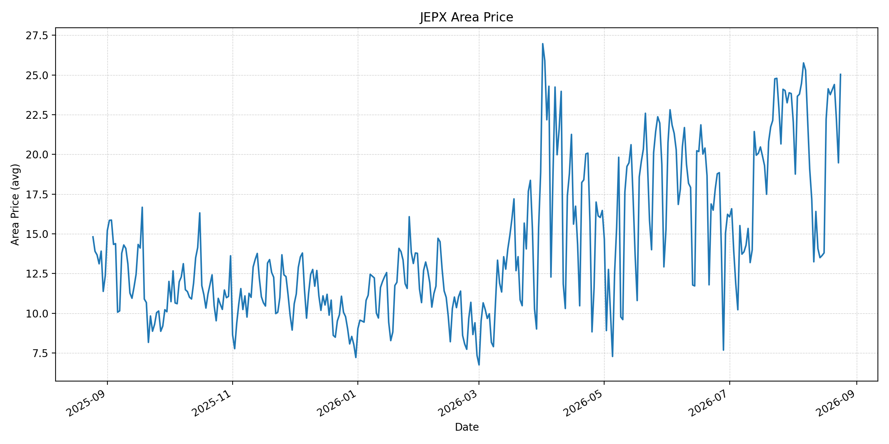
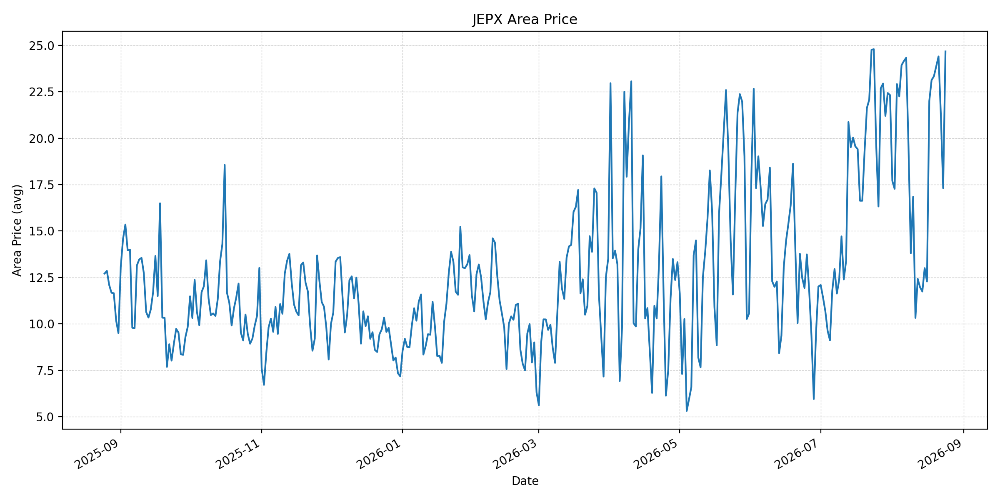
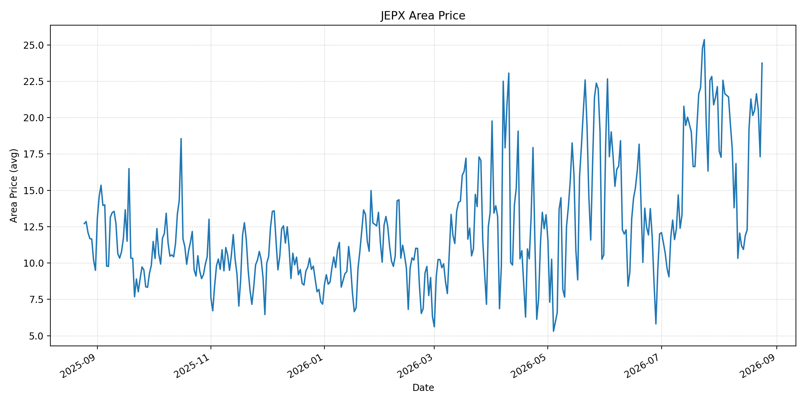
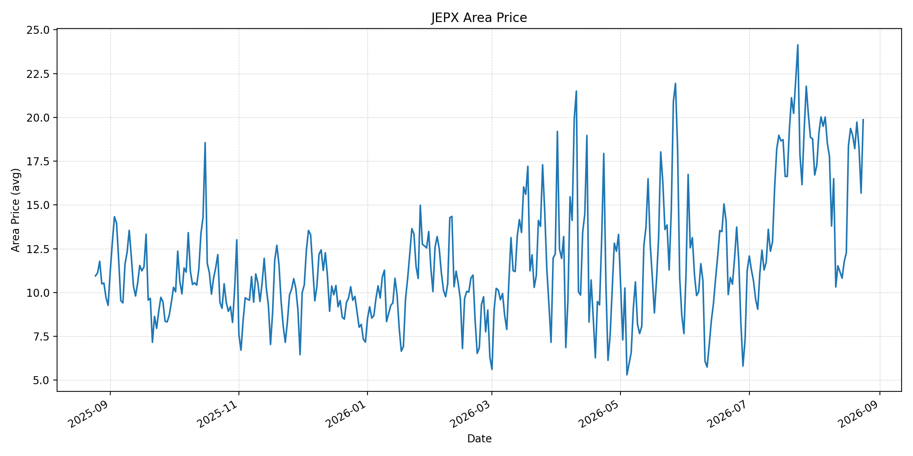
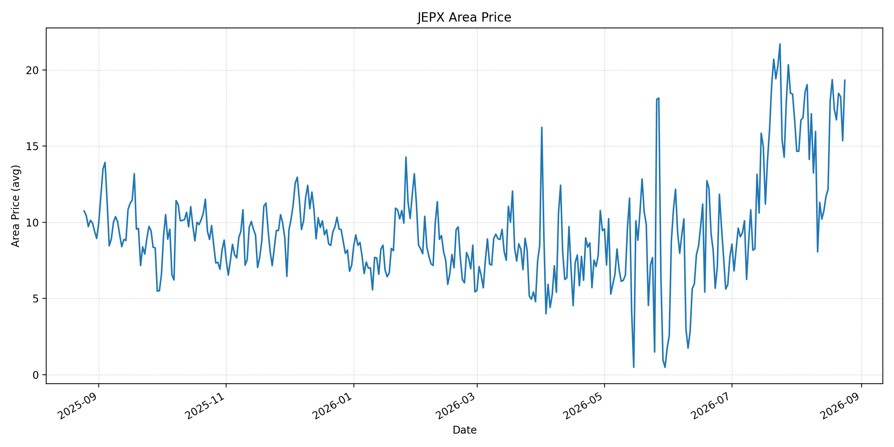
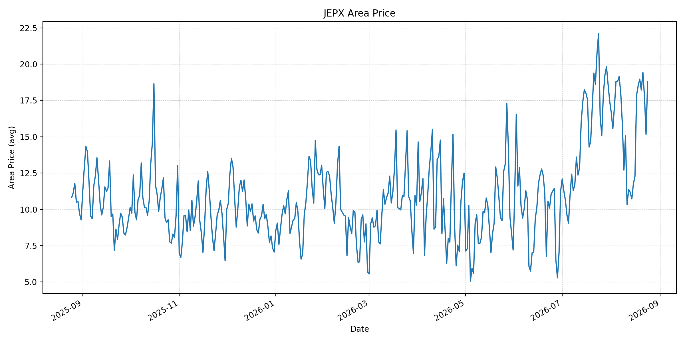
短期トレンド
JKMとJEPXシステムプライスの推移グラフ
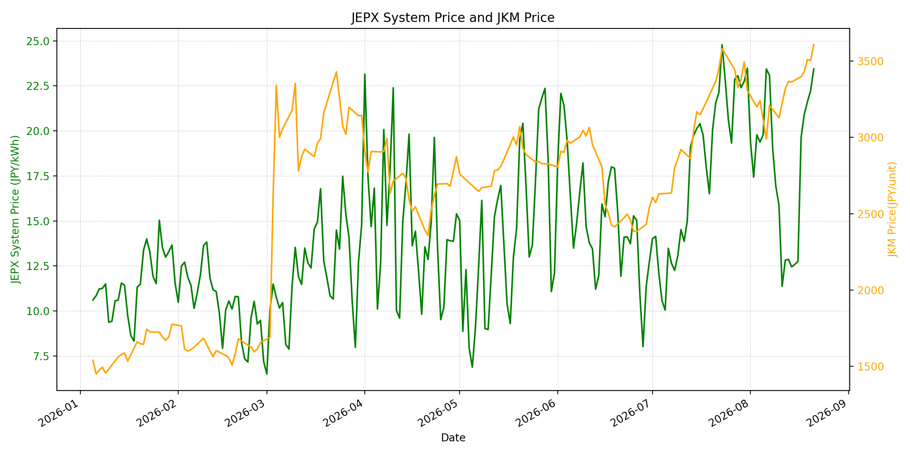
WTIの推移グラフ
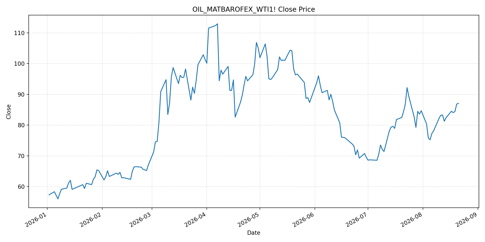
JEPXシステムプライス
JEPXは受渡日ベースの最新非空値で評価しています。最新値は 2026-08-24 分です。先週終値は 2026-08-17、先月終値は 2026-07-31 時点の直近値で評価しています。
| エリア | 当日価格 | 前日価格 | 前日比（％） | 先週終値 | 先週比（％） | 先月終値 | 先月比（％） | 過去最高値 | 最高値比（％） |
|---|---|---|---|---|---|---|---|---|---|
| システム | 22.31 | 16.59 | 34.48 | 19.63 | 13.65 | 23.48 | -4.98 | 64.06 | -65.18 |
| 北海道 | 17.87 | 15.24 | 17.26 | 15.39 | 16.11 | 14.86 | 20.26 | 73.92 | -75.82 |
| 東北 | 17.91 | 15.24 | 17.52 | 15.39 | 16.37 | 18.04 | -0.72 | 84.92 | -78.91 |
| 東京 | 23.11 | 19.69 | 17.37 | 21.10 | 9.53 | 23.85 | -3.10 | 86.13 | -73.17 |
| 中部 | 25.04 | 19.47 | 28.61 | 22.22 | 12.69 | 23.83 | 5.08 | 52.06 | -51.90 |
| 北陸 | 24.67 | 17.31 | 42.52 | 22.00 | 12.14 | 22.32 | 10.53 | 46.48 | -46.93 |
| 関西 | 23.75 | 17.31 | 37.20 | 19.21 | 23.63 | 22.13 | 7.32 | 46.48 | -48.91 |
| 中国 | 19.87 | 15.68 | 26.72 | 18.37 | 8.17 | 18.78 | 5.80 | 46.48 | -57.26 |
| 四国 | 19.33 | 15.36 | 25.85 | 17.95 | 7.69 | 16.74 | 15.47 | 46.48 | -58.42 |
| 九州 | 18.82 | 15.16 | 24.14 | 17.85 | 5.43 | 17.46 | 7.79 | 40.54 | -53.58 |
LNG先物価格
最新値は 2026-08-21 の LNG(close) です。前日価格は 2026-08-20、先週終値は 2026-08-14、先月終値は 2026-07-31 時点の直近値で評価しています。
| 当日価格 | 前日価格 | 前日比（％） | 先週終値 | 先週比（％） | 先月終値 | 先月比（％） | 過去最高値 | 最高値比（％） |
|---|---|---|---|---|---|---|---|---|
| 3607.00 | 3504.00 | 2.94 | 3363.00 | 7.26 | 3307.00 | 9.07 | 10319.00 | -65.05 |
石油先物価格
最新値は 2026-08-21 の OIL(close) です。前日価格は 2026-08-20、先週終値は 2026-08-14、先月終値は 2026-07-31 時点の直近値で評価しています。
| 当日価格 | 前日価格 | 前日比（％） | 先週終値 | 先週比（％） | 先月終値 | 先月比（％） | 過去最高値 | 最高値比（％） |
|---|---|---|---|---|---|---|---|---|
| 87.06 | 86.83 | 0.26 | 82.40 | 5.66 | 84.67 | 2.82 | 123.70 | -29.62 |
ニュース
イラン情勢に関するニュース
- イラン最高安全保障機関の新長官は、米国による新たな経済措置への他国の支持を「戦争行為」と見なすと警告しました。パキスタン等の仲介を通じた協議再開が模索される一方、政治的対立は強まっています。参照: AP, 2026-08-23
- 過去24時間で、通航管理合意を確定させる主要な新規発表は確認できませんでした。イランは米・イラン覚書を膠着状態の出口と位置付けつつ、海峡の管理を巡る制約を維持しています。参照: AP, 2026-08-23
ホルムズ海峡経由の石油・LNGに関するニュース
- ホルムズ海峡の攻撃は沈静化したと報じられる一方、新設のイラン当局は将来の通航を制限する数十隻を列挙しました。安全事案の減少だけでは、継続的な自由航行を保証しない状況です。参照: AP, 2026-08-23
- イランは、近隣国が対イラン経済措置に参加すればペルシャ湾からの石油輸送ルートを標的にすると警告しました。船舶運航・保険のリスクは、海峡内外でなお高い状態です。参照: AP, 2026-08-22
ホルムズ海峡経由でない石油・LNGに関するニュース
- イランはペルシャ湾からの代替石油航路も標的にする可能性を示しました。迂回・代替策は物量面の選択肢である一方、安全・保険面のリスクを必ずしも低下させません。参照: AP, 2026-08-23
- 過去24時間で、ホルムズ以外のLNG供給量を直接変更する主要な新規公表は確認できませんでした。
日本国内のイラン戦争に関係するニュース
- 過去24時間で、JEPX制度、国内電力需給ルール、または日本政府のイラン戦争関連対策を直接変更する主要な新規公表は確認できませんでした。
- 経済産業省は、備蓄を活用すれば保守的な調達想定でも2027年度末まで安定供給が可能との見通しを示しています。備蓄は数量面の緩衝材であり、航路安全や調達コストの不確実性を解消するものではありません。参照: METI, 2026-06-16
インサイト
ニュース事項による日本の電力市場への影響（短期：数日〜1週間）
- JEPXシステムプライスは 22.31 円/kWhで前日比 34.48%、先週比 13.65% と反発しました。中部 25.04 円/kWh、北陸 24.67 円/kWh、関西 23.75 円/kWhが高く、休日の低価格から需給が戻っています。
- LNGは 3607.00 で先週比 7.26%、WTIは 87.06 ドルで 5.66% 上昇しました。代替航路も含む威嚇は、短期の燃料リスクプレミアムを支える要因です。
- 数日から1週間では、海峡内外の実通航量の回復と制限対象船舶の運用が重要です。制約の拡大や船舶攻撃の再発は、燃料費とJEPXの上振れリスクとなります。
ニュース事項による日本の電力市場への影響（長期：1ヶ月〜半年）
- JEPXシステムは先月比 -4.98%、LNGは 9.07%、WTIは 2.82% です。海峡・代替航路双方のリスクが持続すれば、LNG・原油の上昇が火力限界費用へ波及する可能性があります。
- 北海道は先月比 20.26%、四国 15.47%、北陸 10.53% と上昇する一方、東京 -3.10%、東北 -0.72% と低下しています。燃料市況だけでなく、エリア別需給と連系制約を併せて監視する必要があります。
- 過去最高値比ではシステム -65.18%、LNG -65.05%、WTI -29.62% です。1ヶ月から半年は、ホルムズ・代替航路の実通航量、制裁を巡る外交、国内在庫の補充速度を分けて確認することが重要です。